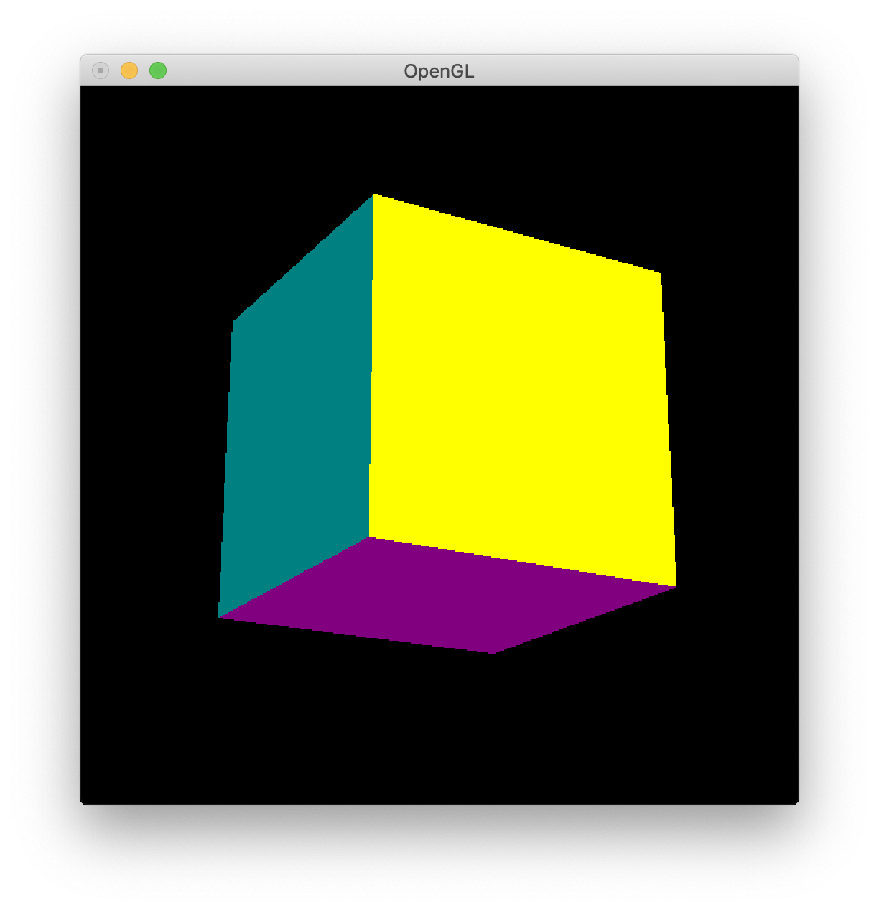

第９回
| 氏名 | 林橘平
|
|---|
| クラス | 総合情報学コース3年
|
|---|
| 学生証番号 | 08-192025
|
|---|
□課題9.1 - 11.3節 例 1: 透視投影による立方体の描画
○プログラムリスト
例題のため略
○実行コマンド
(base) MBP:Chap11 hayashikippei$ python3 cubeMatrix.py
eyeX eyeY eyeZ or [] ->
○実行結果
○考察
透視投影による立方体の描画をするcubePositionをインポートした。window(),init(),argsInit()は
cubePositionのものをそのまま使っている。reshape()を変更している。reshape()ではxyz座標系から
視点座標系に変換するための行列計算を行なっている。11.1章に記載の通り、translateは平行移動行列、
rotateX,rotateYはX,Y軸周りの回転行列である。変換はまずy軸方向に回転してからx軸方向に回転し、最後に
平行移動するが、OpenGLでは順序が逆になるので逆からglMultMatrixd()を用いて計算している。
loop()もreshape()を呼び出すので変更する必要がある。
□課題9.2 - 11.3節 例 2: 角度指定による立方体の描画
○プログラムリスト
例題のため略
○実行コマンド
(base) MBP:Chap11 hayashikippei$ python3 cubeAngle.py
FOV / near far / rotX rotY rotZ/ [] ->
○実行結果
○考察
例1から新たな変数として、fieldOfView, near, far, depth, rotX, rotY, rotZを導入した。
depthは-10で固定であり、その他の変数に関してはgetArgs(),argsInit()でキーボード入力から値を受け取っている。
入力文字列が1つならfieldOfView,２つならnear, far、3つならrotX, rotY, rotZにそれぞれ値が代入される。
fieldOfViewは画角、near, farはクリッピング面の前方、後方の視点からの距離。rotX, rotY, rotZは視線方向の角度の変数である。
今回はデフォルト値で実行した。課題9.4で値を変えて実行していく。
□課題9.3 - 11.3節 章末課題：視点位置
○プログラムリスト
課題9.2と同じため略
○実行コマンド
(base) MBP:Chap11 hayashikippei$ python3 cubeAngle.py
○実行結果

左上から右下に順番に、
(rotX, rotY, rotZ) =
(0,0,0), (-10,20,-30), (20,-30,30),
(0,30,15), (-20,30,0), (20,40,0),
(10,10,10), (50,50,50) (90,90,90)
○考察
様々な方向からの画像を作成した。(0,0,0)の時は視点方向が正面なので正面の黄色い面しか見えない。
(90,90,90)の時も同様に真横方向からなので青い面しか見えていない。その他の数値においても、それぞれ対応した方向から
立方体を投影した画像が描画されている。
□課題9.4 - 11.3節 章末課題：画面とクリッピング面の効果
○プログラムリスト
課題9.2と同じため略
○実行コマンド
(base) MBP:Chap11 hayashikippei$ python3 cubeAngle.py
○実行結果

左上から右下に順番に、fieldOfView=
0, 10, 40,
75, 120, 180,
200,400, 600
左上から右下に順番に、(near, far)=
(9,9.5), (9.9,10), (10,10.5)
(11,12), (20,1),(9,9)
○考察
まずfieldOfViewについて、0 ~ 120までは値が大きくなるにつれて段々立方体から遠ざかっていっている。
fieldOfView=0の時は立方体の内側に入り込み、内部は黒く表示されている。fieldOfView=180の時は何も映らず、fieldOfView=200になった時も更に小さくなっているが、
よく見ると立方体の視点方向が真逆になっていることがわかる。180を越えると真逆の方向から立方体を描画していることわかる。また、fieldOfView=400の時はfieldOfView=40の時と同じ大きさになっている。
これは角度が360で一周するためであると考えられる。fieldOfView=600になると再び逆方向から立方体を投影しているのがわかる。
次にnear, farについて。これはクリッピング面を指定しており、(near,far)の範囲にある図形が描画される。
そのためnear=far=9にすると、立方体を切り取った断面の図形が描画される。(一番右下)
今depth=-10のため、near,farは[9,11]の範囲内を外れると、立方体の範囲外の何もない空間を描画する。(neaf,far=(11,12)の時。neaf,far=(4,5)の時も同様の結果。)
near,farが[9,11]の範囲内にあると立方体の範囲内を描画する。
near,farの差が小さくなるにつれて立方体を切り出す範囲も小さくなっていることが上側の３枚の画像からわかる。
□課題や授業に関して
○レポート作成に要した時間
2時間
○特に苦労した点
なし
○授業についての感想や希望
なし